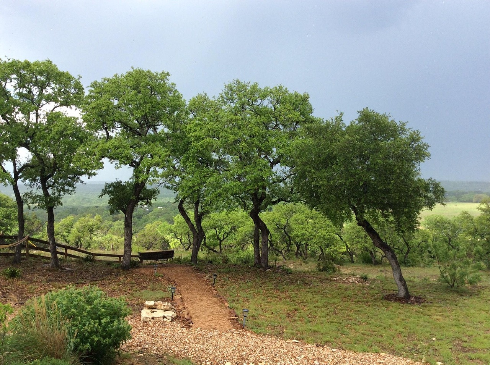

Weekly collection
Regular garbage pickup on a weekly schedule — ask about your route when you call.
Gillespie County · Fredericksburg, TX
Gillespie Waste Service provides weekly garbage collection throughout most of Gillespie County at an affordable price. Locally owned by Kyle Koch — call or text anytime with questions.
Clear service, local ownership, and a fast way to confirm pickup at your address.
Regular garbage pickup on a weekly schedule — ask about your route when you call.

Serving households across most of Gillespie County, including the Fredericksburg area.

Call, text, email, or message on Facebook — no online form required to get started.

Weekly garbage collection throughout most of Gillespie County — including Fredericksburg. Availability is confirmed by address.
Tell us your location — we’ll confirm whether we serve your address.
Three short steps — no online account required.
We’ll check whether your location is on a weekly route across most of Gillespie County.
Get set up for weekly collection and ask any questions about containers or service day.
Locally owned. Weekly routes. Straightforward service.
Gillespie Waste Service is a Gillespie County hauler led by Kyle Koch — serving the community since 2017.
Questions about residential pickup, a new address, or whether we serve your area? Reach out directly.